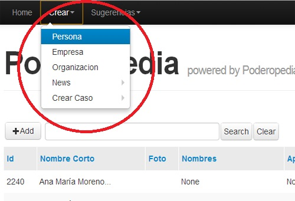
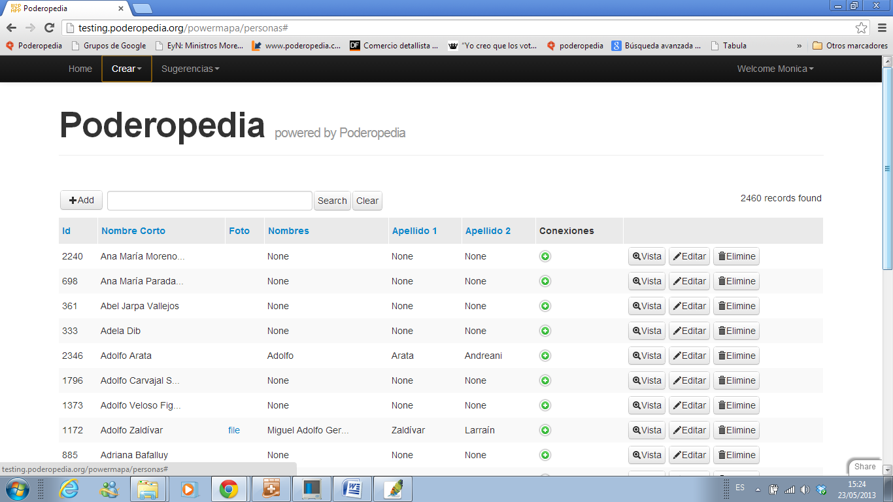
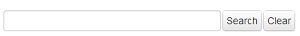
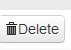
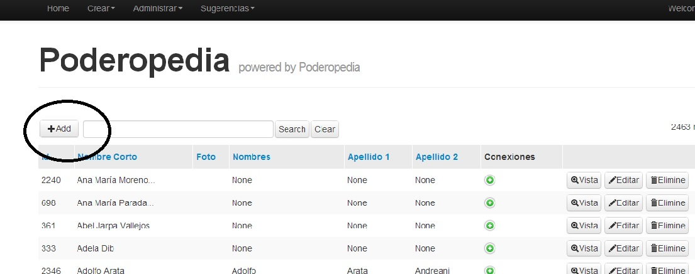
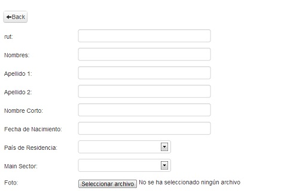
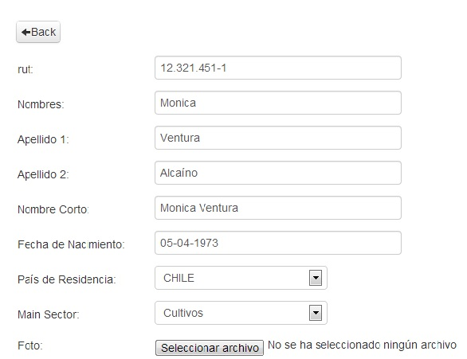
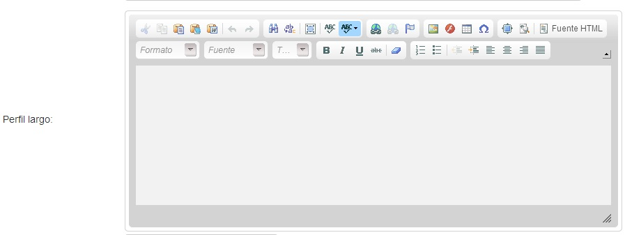
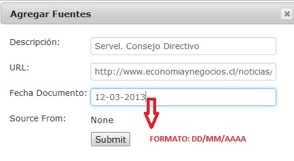

For purposes of this manual we will use as an example the creation of a “PERSON” entity. COMPANIES and ORGANIZATIONS entities operate in the same way.
1. - Go to “Create” in the menu, select the entity you want to enter. (Fig. 03).
In our example we will enter a PERSON entity.
(Fig.03)

2.
- This will display a grid with the previously added ENTITIES (Fig
04). If
you have not added any ENTITY, you will only see the button 
(Fig. 04)

These are the elements that the grid contains (Fig. 04)
|
Add ENTITY FORM |
 |
ENTITY search box |
|
Show CONECTIONS |
|
Preview ENTITY FORM |
|
Edit ENTITY FORM |
 |
Delete ENTITY FORM |
3.
- To add a new ENTITY FORM
you should use the following button:  (Fig.05)
(Fig.05)
(Fig.05)

4.-
It will display the Person entity Form, where you can enter the Basic
Profile Information (Fig. 06)
, Summary (Fig. 08),
Long Profile (Fig.0 9),
Sources (Fig.10),
“Document Cloud” Sources (12a),
if he is deceased or not (Step 6) and the Social Network (Step 7).
4.1. - Basic data (Fig. 06)
(Fig. 06)

You must enter the required Basic Information (Fig. 07). The required fields are Name, Surname, Short Name and Country. All the other fields are optional.
The Date of Birth should be written in the DD/MM/YYYY format, the Home Country should be picked from the Menu, the Sector should be picked from the Menu, and the profile picture should be 140 x 140 Pixels (JPG or PNG formats).
(Fig. 07)
Example: We will add the data from the PERSON entity “Mónica Ventura Alcaíno”

4.2. - We enter her Review (Summary Profile) (Fig. 08) and the Long Profile (Fig.09), which contains a rich text editor where you can put links, bold, subtitle, etc. . . .
(Fig. 08)

(Fig.09)

4.3. - Add one or more Sources (Fig. 10). To add a Source you must click on the button
Use of the source tool
To use the source tool, simply click on the  button to see a list of available sources. There, you can check any
sources you want to include, and search for sources in the search
box.
button to see a list of available sources. There, you can check any
sources you want to include, and search for sources in the search
box.
.
4.3.1.-It will display the Source Form (Fig. 11) (It only allows Sources form websites). Then you have to enter the required data. The date is entered in format DD/MM/YYYY.
(Fig. 11)

4.3.2. - The Source Form will close itself when you save it. The Source will be added to the alphabetically ordered list. (Fig. 12). You will have to choose it then. To choose more than one Source, you can pick them by keeping pressed the CTRL button on your keyboard and clicking the Title of the Sources you want.
(Fig. 12)

5. - Use of the Document tool
Upload PDF Document associated with Document Cloud (Fig. 12 a). You can upload PDF documents linked with the Document Cloud tool (www.documentcloud.org) from Poderopedia.
You can only upload them in the Poderopedia Admin interface, to modify documents you must do so directly from the Document Cloud tool.
5.1. - To use the document tool; click the  button to see a list of documents available on Document Cloud. There,
you can check all the documents you want to include, or search for
documents in the search box.
button to see a list of documents available on Document Cloud. There,
you can check all the documents you want to include, or search for
documents in the search box.

5.2.
- To add a new Document to Document cloud click the  button and fill the required data.
button and fill the required data.
The Entry Form of
a new PDF document will be displayed (Fig.
12 b) you must complete the required
data. The required fields are File (Select File) and Document Title.
You can set the Source of the Document (Example: World Bank), Document
Description, Associated
Document URL. Access option is mandatory (if you want to publish the document to all the
public, you must choose the Public option, otherwise you must choose
Private). Finally, you must choose a Project (mandatory). Poderopedia
Chile has three Projects: People, Enterprises and Organizations,
which we upload PDF documents related to each of them. You must
create these projects from the Document Cloud tool.
(Fig. 12 b)

6. - Is deceased. If the person is deceased you must check this option

7. - Social Networks. Fill the form with the following data (optional)

8.
- Save the Profile Form with the Button